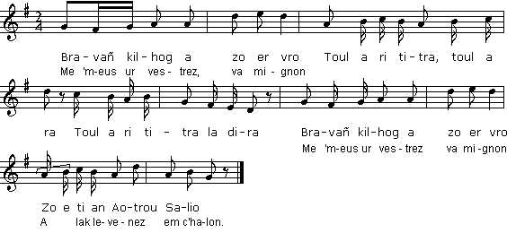
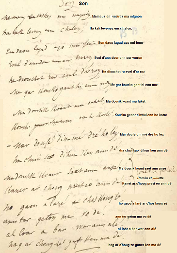
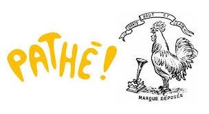

Me 'm-eus ur vestrez, ma mignon
Celle que j'aime, mon ami
I have a sweetheart, my dear boy
Chant collecté par Théodore Hersart de La Villemarqué
dans le 1er Carnet de Keransquer (p. 219).

Mélodie: "Ar kilhog"
|
A propos de la mélodie: Inconnue. Remplacée ici par "Ar kilhog" (Le coq), tiré de "Kanaouennoù Pobl", chansons recueillies par Alfred Bourgeois dans la deuxième moitié du XIXème siècle; le recueil a été publié en 1959 à Paris (source: le site de M. Pierre Quentel (voir "liens"). Bibliographie La Villemarqué est le seul à avoir collecté cette chanson. Cette pièce est remarquable à deux points de vue: C'est un "Roméo et Juliette breton" On a vu que la dernière strophe du Pontplencoat recueilli par La Villemarqué comporte une citation du Macbeth de Shakespeare. Comme indiqué par La Villemarqué dans la marge en face des vers 11-12, les strophes 6 à 8 font écho à un passage célèbre de "Roméo et Juliette" du même Shakespeare (acte II, scène V): Juliette: "Tu pars déjà? Il ne fait pas encore jour: C'était le rossignol et non l'alouette Dont ton oreille craintive a perçu le chant..." Cette tragédie fut publiée pour la première fois en 1597, mais le conte italien sur lequel elle est basée est plus ancien. Il fut traduit en vers anglais en 1562 par Arthur Brooke et en prose en 1582 par William Painter. Ou plutôt une "chanson d'aube" Il se pourrait que l'archétype de la chanson bretonne notée par La Villemarqué soit plus ancien encore, si l'on considère qu'il s'agit d'une "alba", d'une "chanson d'aube" où l'on évoquait la séparation de deux amants à l'arrivée de l'aube. Le "fin amor" aristocratique en langue d'oc exaltait la tension douloureuse vers une dame aimée inaccessible, un sentiment non chrétien en vérité, d'où sont absents le péché et la culpabilité, le "joy" (en breton, "levenez" (cf. str. 1)) ou désir sans cesse renouvelé qui porte en lui douleur et délice. Mais après avoir migré à la fin du XIIème siècle vers les territoires de langue d'oïl, l'amour courtois fait une place plus grande à la vie réelle et à l'amour réalisé, dans quatre genres : la pastourelle, la reverdie, la chanson de toile et la chanson d'aube (qui reprend les codes de l'"alba" occitane, sans toutefois conférer au passage de la nuit au jour la dimension symbolique qu'elle avait pu avoir dans son modèle, et dit la plainte des amants qui doivent se quitter avant que le soleil ne se lève). C'est visiblement à ce dernier genre que se rattache notre chant breton, si on le compare avec cette pièce du domaine d'oïl: Entre moi et mon amin En un boix k'est le Béthune Alainmes juwant mairdi Toute la i nuit à la lune; Tant k'il ajornait Et ke l'alowe chantait ke dit "amins alons an" Et il respond doucement: "Il n'est mie jours Saverouse au cors gent Si m'ait amors, L'alowette nos mant." Qui cite le plus ancien texte breton connu En effet l'équivalent de la strophe 4 apparaît sous forme de glose en moyen-breton ajoutée par un copiste à un manuscrit du 14ème siècle, le "Speculum historiale" de Vincent de Beauvais, suivi de la "Table alphabétique de Jean Hautfumé", qui forme deux volumes conservés à la BN, le "ms lat. n° 14354-14355". La table de Hautfumé permet précisément de dater ce document. Cette découverte est due au romaniste Antoine Thomas, qui confia aux celtisants Joseph Loth et Emile Ernault , l'étude de ces gloses (7 au total) en janvier 1913: "Ar gwen gwenn am laouenas/ An hegarat, al lagad glas" ([la fille à] la joue blanche m'a réjoui,/L'agréable, [celle à] l'il bleu), Il s'agit sans doute d'un vers de huit pieds extrait d'une chanson, peut-être la même que celle dont il va être question plus loin. "Mar ham guorant va karantic Da vout in nos o he costic vam garet nep pret etc. va" Ce que J. Loth traduit ainsi: "si mon petit amour me garantit d'être la nuit à son petit côté (La suite est incompréhensible: "Mère chérie..."). Dans le tome I de l'"Histoire littéraire et culturelle de la Bretagne" (?Paris / Genève, Champion - Slatkine, 1987. 3 vol.), Léon Floriot propose une autre lecture: "An guen heguen am louenas An hegarat, an lacat glas... Mar ham guorant va karantit Da vout in nos oh he costit uam garet nep pret -(et)-" transcrit dans une orthographe normalisée simplifiée, rendant compte de l'ancienne prononciation, en: "An wenn hewen am lowenas An hegarat, an lagat glas... Mar ham guorant va kharantidh Da vout in nos okh he khostith Wamm garet nep pret..(et)-" et traduit par rapprochement de certains mots avec lle gallois (hywen=souriant, wamm garet=femme aimée...): "La blanche souriante m'a réjoui, L'aimable à l'oeil bleu... Si me garantit mon amour D'être la nuit à son côté, Femme aimée, à tout instant..." Ce court texte dont l'original peut remonter au XIème siècle illustre la ressemblance de l'ancienne métrique bretonne avec l'"harmonie à la traine" galloise ("cynghanedd lusg") sur un point: une (ou plusieurs) syllabe à l'intérieur du vers (accentuée ou non) rime avec l'avant-dernière syllabe dudit vers. "Me am-eus un amouric/ yoliic/ endan an del[ioù] mé [/a gave]" (J'ai une amourette/Joliette/Que sous la ramée/J'ai trouvée). Ce genre d'écho est imité de chants français tels que: "Le chantre Rossignolet/ Nouvelet,/Courtisant sa bien-aimée/ Pour ses amours alléger/ Vient loger/ Tous les ans en ta ramée." Une très ancienne chanson On retiendra que La Villemarqué, qu'on a parfois accusé de ne pas avoir collecté les chants qu'il a publiés, avait recueilli plus de 70 ans à l'avance un chant apparenté, en partie, au plus ancien texte suivi en langue bretonne que l'on connaisse, chant qu'il est le seul à avoir recueilli. Depuis fin novembre 2018 on peut consulter en ligne les photos de toutes les pages des 3 carnets de Keransquer. Sur la page 219 du carnet n°1, les mots imprimés en italiques dans le texte ci-après correspondent à des ajouts (refrain) ou à des passages difficilement déchiffrables. Il semble qu'à la strophe 4, les mots manquants soient "laket" et "genorc'hwui" (en KLT: "lakaet" et "ganeoc'h-c'hwi", signif?iant "permettez" et "avec vous"), qui, s'ils diffèrent de ceux de la glose qui porte les mots "guorant" et "karantit", en reproduisent toutefois le sens général. Si cette chanson bretonne était l'héritière d'un archétype datant du 14ème siècle, ce serait peut-être la doyenne du répertoire des chansons traditionnelles identifiables françaises au sens large. Les plus anciennes chansons citées par Martin Pénet dans sa "Mémoire de la Chanson" (chez Omnibus, 1998) sont "Le roi Renaud", "La fille du roi Louis" et "La jolie Flamande", toutes datées du 15ème siècle, tout comme la "voix-de-ville", "Le carillon de Vendôme". (Voir aussi: La ceinture de noces, par. "Une marqueterie de chants" et le poème "Ode à Mofudd" par Dafydd Ap Gwilym, en bas à droite). Deux chants du 16ème siècle C'est encore à Emile Ernault que l'on doit d'avoir signalé dans des textes du 16ème siècle les deux citations de chants suivantes::
Viendrait ensuite, par ordre d'ancienneté, |
About the tunes Unknown. Replaced here by "Ar kilhog" (the Cock), from "Kanaouennoù Pobl", a collection of songs set up by Alfred Bourgeois in the second half of the 19th century and published in 1959 in Paris (source: the site of M. Pierre Quentel (see "links"). Bibliography La Villemarqué is the only collector of this song. This piece is remarkable for two reasons: It is a Breton "Romeo and Juliet" As stated earlier, the song Pontplencoat collected by La Villemarqué includes an excerpt from Shakespeare's Macbeth. As hinted by La Villemarqué himself in a margin note opposite to lines 11-12 of the present song, stanzas 6 to 8 echo a famous passage in "Romeo and Juliet" by the same Shakespeare (act II, scene V): Juliet: "Wilt thou be gone? It is not yet near day: It was the nightingale, and not the lark That pierced the fearful hollow of thine ear... This tragedy was first published in 1597, but the Italian tale whereon it elaborates is older. It was translated in English verse in 1562 by Arthur Brooke and in prose in 1582 by William Painter. Or is it a "song of dawn"? Yet the archetype of the Breton song recorded by La Villemarqué could predate Shakespeare's tragedy. Especially if we consider it as an "alba", a "song of dawn" in which the 12th and 13th century poets told of the parting of two lovers at daybreak. The aristocratic "fin amor" of the Occitan troubadours extolled the painful tension towards an inaccessible ladylove, a truly non-Christian feeling, free of sin and guilt, known as "joy" (in Breton "levenez", see st. 1), i.e. endlessly prolonged yearning, a source of both pain and delight. After it had wandered, in the late 12th century, in the northern "langue d'oïl" areas, courtly love gave more room to real life and worldly love, expressed in four forms of poetry: "pastourelle", "reverdie", "chanson de toile" and "chanson d'aube". The last mentioned "song of dawn" resumes the codes of the Southern "alba", without bestowing on the transition from darkness to daylight the symbolic import it may have had in its model. It tells the complaint of lovers who have to part before sunrise. The comparison with the below sample makes obvious that our Breton song is closely relating to this latter genre: My friend and I To a grove near Bethune We went to play last Tuesday All through the night under the moon, Until dawn The skylark sang Saying "Friend, let's go!" And he answered in a low tone: "It is not yet daylight Charmer with your pretty body! I swear it by my love: This lark lies!" Which quotes the oldest extant coherent Breton text The equivalent of stanza 4 appears as a Middle-Breton gloss appended by a copyist to a 14th century MS, the "Speculum historiale" by Vincent de Beauvais, followed by "Jean Hautfumé's alphabetical Table", whose two volumes are kept at the Bibliothèque Nationale as the "ms lat. n° 14354-14355". Hautfumé's Table avails for the accurate dating of this document. This discovery was made by the romanist Antoine Thomas, who entrusted the Celtologists Joseph Loth and Emile Ernault , with examining all these seven glosses in January 1913: "Ar gwen gwenn am laouenas/ An hegarat, al lagad glas" ([the girl with] the white cheek[s] delighted me,/The charming one, [with her] blue eye[s]), We may assume this to be an 8 foot verse drawn from a song, possibly the song addressed hereafter. "Mar ham guorant va karantic Da vout in nos o he costic vam garet nep pret etc. va" Which J. Loth translates as: "if my little love guarantees I'll be tonight by her little side (It is impossible to construe the rest: "Dear mother...") In the First book of "Histoire littéraire et culturelle de la Bretagne" (?Paris / Geneva, Champion - Slatkine, 1987. 3 vol.), Léon Floriot suggests another reading for this verse: "An guen heguen am louenas An hegarat, an lacat glas... Mar ham guorant va karantit Da vout in nos oh he costit uam garet nep pret -(et)-" transcribed in a normalized basic spelling which accounts for the former pronunciation, as: "An wenn hewen am lowenas An hegarat, an lagat glas... Mar ham guorant va kharantidh Da vout in nos okh he khostith Wamm garet nep pret..(et)-" and translated by comparing certain words with their Welsh counterparts (hywen=smiling, wamm garet=beloved woman...): "The cheerful, white girl delighted me, The charming one with the blue eye... If my love promises me That I will be tonight by her side, Beloved woman, every moment..." This short excerpt whose archetype may date back to the 11th century highlights the similarity of the old Breton versification with the Welsh drag-harmony ("cynghanedd lusg"): one or more syllables within a line (stressed or unstressed) rhyme with the penultimate syllable of the same line. "Me am-eus un amouric/ yoliic/ endan an del[ioù] mé [/a gave]" (I have got a little love/Dainty love/That under the boughs, don't mind!/I did find). This kind of burden may also be encountered in old French ditties: "Nightingale, a fine minstrel/How novel!/In order to court and woe/ Every year upon this birch/ Comes to perch/ When he feels with love aglow." A very ancient song We should retain that La Villemarqué, who was suspected by many detractors that he did not collect the songs he published, had gathered over 70 years in advance a song, at least partly, related to the oldest extant coherent text in Breton language, an achievement which no other collector can boast. Since end of November 2018, photos of the pages of all three Keransquer collecting books may be displayed online. On page 219 of copybook N°1, the words printed in italics in the below text are either added in the translation (burden), or hardly legible in the original. It appears that the missing words in stanza 4 could be restored as "laket" and "genorchwui", in modern spelling "lakaet" and "ganeoc'h-c'hwi", meaning "you permit" and "with you", which admittedly differ from those in the gloss, "guorant" and "karantit", but allow to construe a sentence with a like meaning. Should this Breton song really be an offshoot of the 14th century archetype, it could possibly be the oldest clearly identified song in the repertoire of traditional folksongs within the French boundaries. The oldest songs quoted by Martin Pénet in his thick book "Mémoire de la Chanson" (printed by "Omnibus", 1998) are "King Renaud", "King Lewis' daughter" and "The fair Flemish woman". All of them date back to the 15th century, as does the "vaudeville" song "The chimes of Vendôme". (see also: The Wedding Belt, par. "A patchwork of songs" and the poem "Cywydd to Mofudd" by Dafydd Ap Gwilym, bottom left). Two songs from the 16th century It is also to Emile Ernault that we owe having pointed out in 16th century texts the following two mentions of old Breton songs:
Then would come, by order of seniority, |
|
BREZHONEK MA MIGNON p. 219 1. Me 'm-eus ur vestrez, ma mignon, Toul a ri titra, toul a ra Toul a ri titra la dira Me 'm-eus ur vestrez, ma mignon, A lak levenez em c'halon; 2. An daoulagad a zo 'n he fenn Evel d'an dour en ur werenn. 3. He divjod ruz evel d'ar roz. Me gar kousked ganti en noz: 4. - Ma dousik koant, ma lakaet: Kousko ganeoc'h-c'hwi en ho kostez. 5. - Mar dofec'h din-me, dre ho le Ha c'hwi savo dihun ken an deiz. - 6. - Ma dousik koant, sav't alese! Kanet ar c'hog. Prest eo an deiz. 7. - Gaou a lare ar c'hozh kog-se Hanter-noz gantañ ma vo deiz. 8. Al loar a bar war an ale: Hag ar c'hog-se gan ken 'ma deiz! KLT gant Christian Souchon |
FAC-SIMILE P. 219 CARNET N°1  |
TRADUCTION FRANCAISE MON AMI p. 219 1. Celle que j'aime, mon ami, Toul a ri titra, toul a ra Toul a ri titra la dira Celle que j'aime, mon ami, M'a rendu le cur épanoui: 2. Son doux visage! Ses beaux yeux: Nulle onde n'est plus limpide qu'eux! 3. Ses joues sont roses à ravir! Auprès d'elle qu'il fait bon dormir! 4. - Ma douce belle, permettez Que j'aille dormir à vos côtés: 5. - Vous me jurez, à votre tour, De vous réveiller avant le jour. - 6. - Vite, debout, mon cher amour, Le coq chante! Il fera bientôt jour. 7. - Ce sale coq, il a menti: Il voit poindre le jour à minuit. 8. La lune brille sur l'allée. Ce coq croit que l'aube est arrivée! Traduction : Christian Souchon 'c) 2015 |
ENGLISH TRANSLATION MY DEAR BOY p. 219 1. I have a sweetheart, my dear boy, Toul a ri titra, toul a ra Toul a ri titra la dira I have a sweetheart, my dear boy; She's a girl who fills my heart with joy; 2. Her eyes illuminate her face, Limpid as clear water in a vase. 3. Her cheeks are as pink roses bright. I love sleeping by her side at night: 4. - Dear sweetheart, give me guarantee: To sleep by your side shall I be free? 5. - If you promise to be as wise As to go away before sunrise. - 6. - My dear sweetheart, get up, come on! The cock has crowed: soon it will be dawn. 7. - This nasty cock, is telling lies! It is midnight: untimely it cries. 8. The moon shines bright over the way And, the foolish beast, it greets the day! Translation: Christian Souchon (c) 2015 |
